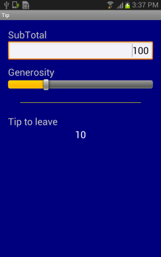
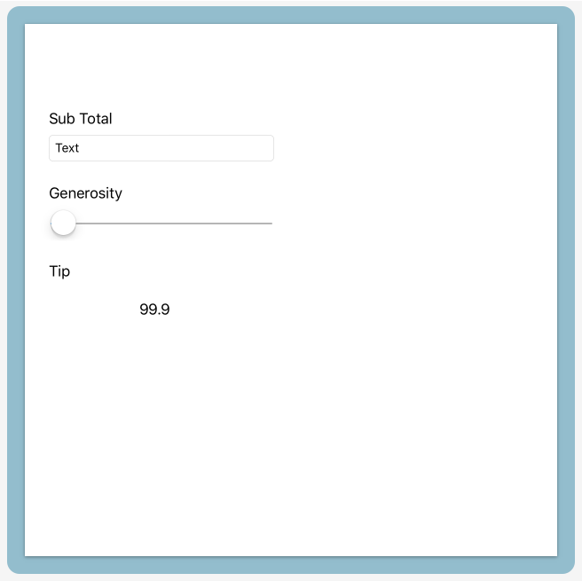
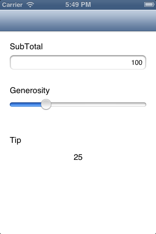

A Xamarin.iOS UI Project
EditWe started with the goal of creating an app to help calculate what tip to leave in a restaurant
We had a plan to produce a UI based on this concept:

To satisfy this we built a ‘Core’ Portable Class Library project which contained:
- our ‘business logic’ -
ICalculation - our ViewModel -
TipViewModel - our
Appwhich contains the application wiring, including the start instructions.
We then added our first User Interface - for Xamarin.Android:

For our next project, let’s shift to Xamarin.iOS.
To create an iPhone MvvmCross UI, you can use the Visual Studio project template wizards, but here we’ll instead build up a new project ‘from empty’, just as we did for the Core and Android projects.
Also, to work with iPhone, for now we will switch to working on the Mac with Xamarin Studio
Create a new iOS UI Project
Add a new project to your solution - a ‘iOS’ -> ‘Single View App’ application with name TipCalc.UI.iOS
Within this, you’ll find the normal iOS application constructs:
- the Resources folder
- the AppDelegate.cs class
- the Entitlements.plist ‘configuration’ information
- the Info.plist ‘configuration’ information
- the Main.cs class
- the Main.storyboard view
Install MvvmCross
Click the Add NuGet Packages... item in the Project menu. Install MvvmCross.Binding.
Add a reference to TipCalc.Core.csproj
Add a reference to your TipCalc.Core project - the project we created in the last step which included:
- your
Calculationservice, - your
TipViewModel - your
Appwiring.
Add a Setup class
Just as we said during the Android construction Every MvvmCross UI project requires a Setup class
This class sits in the root namespace (folder) of our UI project and performs the initialization of the MvvmCross framework and your application, including:
- the Inversion of Control (IoC) system
- the MvvmCross data-binding
- your
Appand its collection ofViewModels - your UI project and its collection of
Views
Most of this functionality is provided for you automatically. Within your iOS UI project all you have to supply are:
- your
App- your link to the business logic andViewModelcontent
For TipCalc here’s all that is needed in Setup.cs:
using MvvmCross.iOS.Platform;
using MvvmCross.iOS.Views.Presenters;
using MvvmCross.Core.ViewModels;
using TipCalc.Core;
namespace TipCalc.UI.iOS
{
public class Setup : MvxIosSetup
{
public Setup(MvxApplicationDelegate appDelegate, IMvxIosViewPresenter presenter)
: base(appDelegate, presenter)
{
}
protected override IMvxApplication CreateApp ()
{
return new App();
}
}
}
Modify the AppDelegate to use Setup
Your AppDelegate provides a set of callback that iOS uses to inform you about events in your application’s lifecycle.
To use this AppDelegate within MvvmCross, we need to:
-
modify it so that it inherits from
MvxApplicationDelegateinstead ofUIApplicationDelegatepublic partial class AppDelegate : MvxApplicationDelegate -
modify it so that the method that is called on startup (FinishedLaunching) does some UI application setup:
- create a new presenter - this is the class that will determine how Views are shown - for this sample, we choose a ‘standard’ one:
var presenter = new MvxIosViewPresenter(this, Window);
- create and call Initialize on a
Setup:
var setup = new Setup(this, presenter);
setup.Initialize();
- with
Setupcompleted, use theMvxInversion of Control container in order to find andStarttheIMvxAppStartobject:
var startup = Mvx.Resolve<IMvxAppStart>();
startup.Start();
Together, this looks like:
using Foundation;
using UIKit;
using MvvmCross.iOS.Platform;
using MvvmCross.iOS.Views.Presenters;
using MvvmCross.Platform;
using MvvmCross.Core.ViewModels;
namespace TipCalc.UI.iOS
{
[Register("AppDelegate")]
public class AppDelegate : MvxApplicationDelegate
{
public override UIWindow Window {
get;
set;
}
public override bool FinishedLaunching(UIApplication application, NSDictionary launchOptions)
{
Window = new UIWindow(UIScreen.MainScreen.Bounds);
var presenter = new MvxIosViewPresenter(this, Window);
var setup = new Setup(this, presenter);
setup.Initialize();
var startup = Mvx.Resolve<IMvxAppStart>();
startup.Start();
Window.MakeKeyAndVisible();
return true;
}
}
}
Add your View
Create an initial UIViewController
Create a Views folder
Within this, add a new ‘View Controller’ and call it TipView
This will generate:
- TipView.cs
- TipView.designer.cs
- TipView.xib
Edit the XIB layout
Double click on the XIB file to edit it.
Just as we did with Android, I won’t go into depth here about how to use the XIB iOS editor - instead I’ll just cover the bare basics, and I’ll also try to provide some comparisons for those familiar with XAML.
Drag/drop from the ‘Toolbox’ to add:
- some
Labels for showing static text - these are likeTextBlocks - a
Text FieldnamedSubTotalTextFieldfor editing theSubTotal- this is like aTextBox - a
SlidernamedGenerositySliderfor editing theGenerosity- this is like aProgressBar - a
LabelnamedTipLabelfor showing theTipresult - this is like aTextBlock
Set the Maximum Value of the Slider to ‘100’.
Using drag and drop, you should be able to quite quickly generate a design similar to:

Edit TipView.cs
Because we want our TipView to be not only a UIViewController but also an Mvvm View, then change the inheritance of TipView so that it inherits from MvxViewController.
public class TipView : MvxViewController<TipViewModel>
The generic parameter to MvxViewController is used to link TipView to TipViewModel.
To add the data-binding code, go to the ViewDidLoad method in your TipView class. This is a method that will be called after the View is loaded within iOS but before it is displayed on the screen.
This makes ViewDidLoad a perfect place for us to call some data-binding extension methods which will specify how we want the UI data-bound to the ViewModel:
public override void ViewDidLoad()
{
base.ViewDidLoad();
this.CreateBinding(TipLabel).To((TipViewModel vm) => vm.Tip).Apply();
this.CreateBinding(SubTotalTextField).To((TipViewModel vm) => vm.SubTotal).Apply();
this.CreateBinding(GenerositySlider).To((TipViewModel vm) => vm.Generosity).Apply();
}
What this code does is to generate ‘in code’ exactly the same type of data-binding information as we generated ‘in XML’ in Android.
Note that before the calls to this.Bind are made, then we first call base.ViewDidLoad(). This is important because base.ViewDidLoad() is where MvvmCross locates the TipViewModel that this TipView will bind to.
Altogether this looks like:
using MvvmCross.Binding.BindingContext;
using MvvmCross.iOS.Views;
using TipCalc.Core.ViewModels;
namespace TipCalc.UI.iOS
{
public partial class TipView : MvxViewController<TipViewModel>
{
public TipView() : base("TipView", null)
{
}
public override void ViewDidLoad()
{
base.ViewDidLoad();
this.CreateBinding(TipLabel).To((TipViewModel vm) => vm.Tip).Apply();
this.CreateBinding(SubTotalTextField).To((TipViewModel vm) => vm.SubTotal).Apply();
this.CreateBinding(GenerositySlider).To((TipViewModel vm) => vm.Generosity).Apply();
}
}
}
Binding in Xamarin.iOS
You will no doubt have noticed that data-binding in iOS looks very different to the way it looked in Android - and to what you may have expected from XAML.
This is because the XIB format used in iOS is a lot less human manipulable and extensible than the XML formats used in Android AXML and Windows XAML - so it makes more sense to use C# rather than the XIB to register our bindings.
Within this section of the tutorial all of our iOS bindings look like:
this.CreateBinding(TipLabel).To((TipViewModel vm) => vm.Tip).Apply();
what this line means is:
- bind the
TipLabel’s default binding property - which happens to be a property calledText - to the
ViewModel’s Tip property
As with Android, this will be a TwoWay binding by default - which is different to what XAML developers may expect to see.
If you had wanted to specify the TipLabel property to use instead of relying on the default, then you could have done this with:
this.CreateBinding(TipLabel).For(label => label.Text).To((TipViewModel vm) => vm.Tip).Apply();
In later topics we’ll cover more on binding in iOS, including more on binding to non-default fields; other code-based binding code mechanisms; custom bindings; using ValueConverters; and creating bound sub-views.
The iOS UI is complete!
At this point you should be able to run your application.
When it starts… you should see:

This seems to work perfectly, although you may notice that if you tap on the SubTotal property and start entering text, then you cannot afterwards close the keyboard.
This is a View concern - it is a UI problem. So we can fix it just in the iOS UI code - in this View. For example, to fix this here, you can add a gesture recognizer to the end of the ViewDidLoad method like:
View.AddGestureRecognizer(new UITapGestureRecognizer(() => {
this.SubTotalTextField.ResignFirstResponder();
}));
Moving on…
There’s more we could do to make this User Interface nicer and to make the app richer… but for this first application, we will leave it here for now.
Let’s move on to Windows!